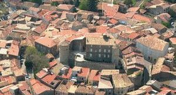
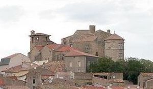
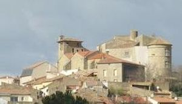
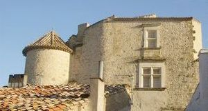
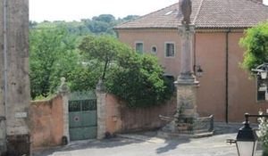
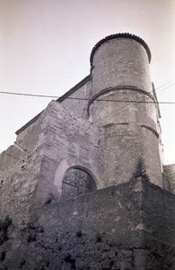
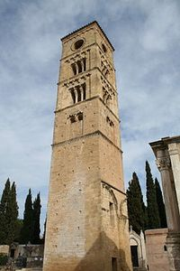

Recensement Jean-Claude Truffet
| Département | 34 — Hérault |
| Canton | Pézenas |
| Commune | Puissalicon |
| Type d'édifice | Château |
| Période d'origine | XI-XIV |







PUISSALICON, à 1 km du village actuel, presque au fond d'un bassin que parcourt le fleuve Libron, sélève au milieu du cimetière communal, Le saint patron de la commune est saint Guiraud, qui naquit à Puissalicon en 1070, il meurt le 5 novembre 1123 à Saint-Aphrodise, il est alors évêque de Béziers. Il occupait ce siège, depuis que l'évêque précédent, Arnaud de Lévezou, avait été élu archevêque de Narbonne, en 1121. La légende rapporte que sa mère ne le porta que sept mois dans son sein et que, lorsqu'on lui administra le baptême, l'eau des fonts baptismaux se mit à bouillonner comme si on y avait planté du fer rouge. Ce prodige fut regardé comme le présage de la sainteté de l'enfant. La légende veut aussi qu'il soit pauvre, pourtant, des biographies antérieures se référant à don Vaissette estiment que plusieurs actes et chartes portant la signature Guiraud, de Puissalicon, sont la preuve qu'il était de famille noble : celle des "Puissalicon". Il fut évêque de Béziers de 1121 à 1123, année de sa mort..
A trois kilomètres le château de PUIMISSON, ancien château féodal, au centre d'un village de plan circulaire, aménagé au XVIIIe siècle. Décor de papier peint daté de 1789. Il a été au cours des temps modifié, cest actuellement un des plus beaux ensembles architecturaux du XVIIe siècle de la région.
Le château féodal de Puissalicon fut construit au XIe siècle dessus de léglise paroissiale de style gothique. Deux grosses tours sélèvent et surmontent un donjon en ruines. Pour y accéder, un grand escalier à vis, construit dans une tour hexagonale qui conduit au donjon. Le château possédait deux portes dentrée de style roman, aujourdhui il nen reste quune. La façade Nord-Est ne doit pas remonter plus haut que le XVIe siècle. Du côté Sud-Ouest sélève la chapelle du château de pur style gothique. Non loin, on voit les traces dun carcan et les débris dun escalier permettant au seigneur de descendre dans léglise paroissiale. La tour de Puissalicon, qui est une tour romane du Xe siècle, d'influence lombarde, et de forme rectangulaire, chacun des côtés mesure 4,30 mètres de largeur pour une hauteur de 26 mètres. Cette tour fut primitivement isolée, indépendante de tout autre édifice, et il est probable qu'elle devint ensuite le clocher de l'église ogivale qui lui fut accolée. Elle comprend 5 étages séparés par des cordons de pierres noires. La base n'offre aucune décoration jusqu'au 1er étage dont elle est séparée par une frise en dents d'engrenage, surmontée d'une large corniche qu'on remarque à près de trois mètres du sol. Les autres étages sont séparés par des cordons saillants. Au 1er étage une fenêtre géminée dont les arcs sont formés de claveaux blancs et noirs. Aux deux étages supérieurs s'ouvrent sur chaque façade 3 baies n'offrant sur chacune des faces que des baies géminées. Le quatrième étage est éclairé par un grand oculus aux encadrements de pierres noires. Il est surmonté d'une frise formée de sept arcatures, semblable à un cordon de pierres noires, connu sous le nom de Cordon de Charlemagne.
Seigneurs locaux
"
Château de Puissalicon et de Puimisson (féodal)